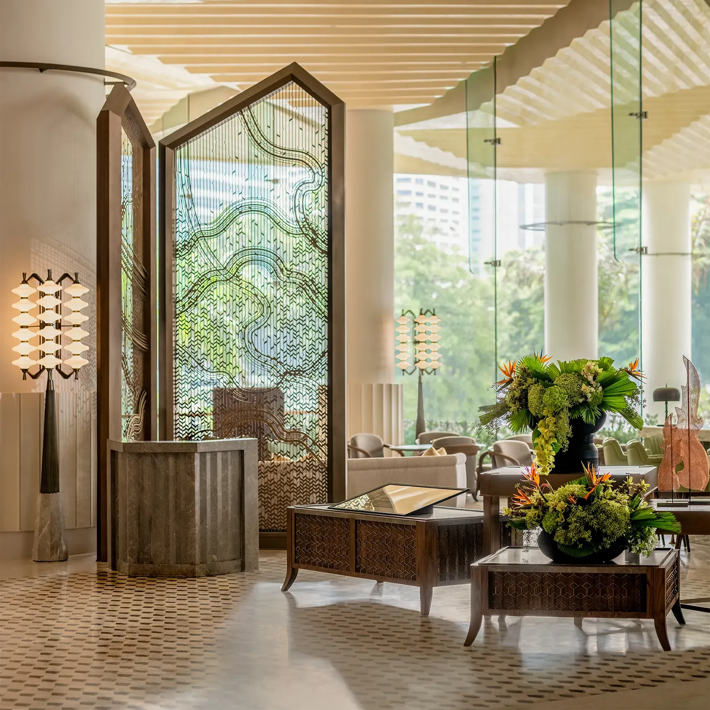
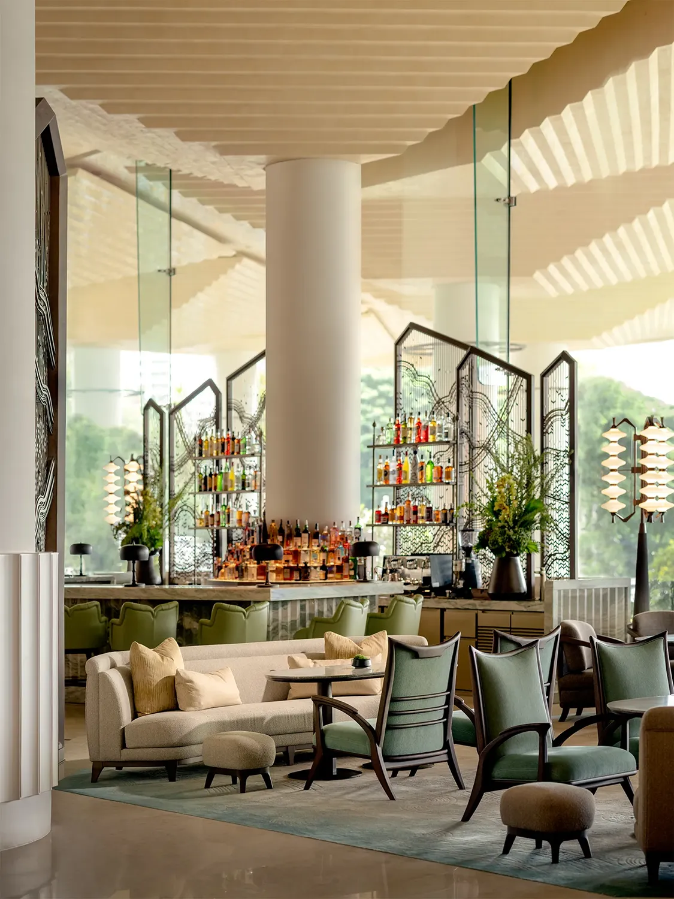

In the Grand Lobby Bar, giant wooden screens with angled tops and intricate decorative patterns define the space. Overhead, a ceiling based on the hotel’s original comprises stepped profiles that descend to meet cylindrical structural columns. An expansive wall of glass provides a view of the park, from which shades of green are lifted and applied to the bar stools, and armchairs with sharply pointed corners that mimic the shapes of Thai architecture. Similarly, sofas with cushioned layers for added comfort and dainty handbag stools both feature wooden legs that gently splay outward—a motif also applied to a series of low display tables with intricate marquetry panels.
Also visible through the lobby’s glazed facade is a tiered fountain that cascades down to the level below. Here, verdant hues are swapped for bold yellow in the Pavilion restaurant, applied across elongated banquettes, cushioned dining chairs, and wall paneling behind a shelving display in a hexagonal room. A mix of geometric tiles and chevron parquet covers the floors, while the ceiling fixtures frame the open kitchen, integrate light boxes, and support pendant lights that resemble precious jewels.
The hundreds of unique custom furniture pieces, millwork details, and architectural finishes all capture the essence of Thailand’s design vernacular through a modern lens. Each design pays reverence to history and honors the beloved reputation of the hotel, while imbuing its spaces with contemporary luxury by way of highly intentional artistry and impeccable craftsmanship. This level of commitment to quality ensures that Dusit Thani Bangkok continues to be a symbol of Thai elegance and sophistication, for generations past, present and future.
The newly renovated hotel is furnished entirely by Stellar Works, creating a holistic example of how the brand can completely transform and elevate a large-scale project through thoughtfully designed bespoke products.
